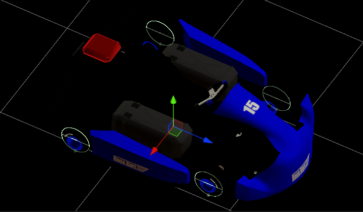

シミュレーター
概要
このページではAIチャレンジで使用されるシミュレーターの仕様について説明します。
シミュレーターは、Autowareのためのオープンソース自動運転シミュレーター「AWSIM」をベースとして作成されています。
起動オプション
| オプション | 型 | デフォルト | 説明 |
|---|---|---|---|
| --timeout | float | 420.0 | セッションのタイムアウトを設定します。 |
| --endless | bool | false | セッションのタイムアウトの有効/無効を設定します。 |
| --pit-stop | bool | true | ピットストップ関連の機能の有効/無効を設定します。 |
| --replay0 | string | 以前の走行ログを読み込み別車両として再生します。 |
リプレイのログには result-details.json を使用します。また、リプレイは --replay0 から --replay9 まで10台の車両に対応しています。
キーボード操作
| 操作 | キー |
|---|---|
| 終了 | Esc |
| リセット | Space |
| カメラ切り替え | C |
| アクセル | Arrow Up |
| ブレーキ | Arrow Down |
| ステアリング | Arrow Left, Right |
| ギア (D) | D |
| ギア (R) | R |
| ギア (N) | N |
| ギア (P) | P |
トピック操作
| トピック | 型 | 説明 |
|---|---|---|
| /aichallenge/awsim/status | std_msgs.msg.Float32MultiArray | シミュレーションの各種状態を取得します。 |
| /aichallenge/awsim/change_time_scale | std_msgs.msg.Float32 | シミュレーションのタイムスケールを設定します。 |
| /aichallenge/awsim/reset | std_msgs.msg.Empty | シミュレーションをリセットします。 |
上記の /aichallenge/awsim/status は以下の構造になっています。
| インデックス | 値 |
|---|---|
| 0 | セッションのタイムアウト |
| 1 | ラップ数 |
| 2 | ラップタイム |
| 3 | セクション |
| 4 | タイムスケール |
車両（レーシングカート）
車両はAWSIMにおけるEGO Vehicleの仕様に準拠しており、実際のレーシングカートに近いスペックで作成されています。

パラメータ
車両のパラメータを以下の表にまとめています。
| 項目 | 値 |
|---|---|
| 車両重量 | 160 kg |
| 全長 | 200 cm |
| 全幅 | 145 cm |
| ホイールベース | 108.7 cm |
| 前輪タイヤ直径 | 24 cm |
| 前輪タイヤ幅 | 13 cm |
| 前輪ホイールトレッド | 93 cm |
| 後輪タイヤ直径 | 24 cm |
| 後輪タイヤ幅 | 18 cm |
| 後輪ホイールトレッド | 112 cm |
| 最大ステアリング転舵角 | 80 ° |
| 駆動時最大加速度 | 3.2 m/s^2 |
Vehicleコンポーネント
Vehicleコンポーネントの設定内容を以下の表にまとめています。各項目の詳細についてはこちらのマニュアルをご覧ください。
| 項目 | 値 |
|---|---|
| Use Inertia | Off |
| Physics Settings (experimental) | |
| Sleep Velocity Threshold | 0.02 |
| Sleep Time Threshold | 0 |
| Skidding Cancel Rate | 0.236 |
| Input Settings | |
| Max Steer Angle Input | 80 |
| Max Acceleration Input | 3.2 |
Rigidbodyコンポーネント
Rigidbodyコンポーネントの設定内容を以下の表にまとめています。詳細についてはこちらのマニュアルをご覧ください。
| 項目 | 値 |
|---|---|
| Mass | 160 |
| Drag | 0 |
| Angular Drag | 0 |
CoM位置
CoM(Center of Mass)は、車両Rigidbodyの質量中心です。CoM位置は、車両の中心かつ車輪軸の高さに設定されています。


車両コライダー
車両コライダーは、車両と他オブジェクトやチェックポイントとの接触判定に利用されます。車両コライダーは車両オブジェクトのメッシュをベースとして作成されています。

ホイールコライダー
車両には各車輪に1つずつ、合計4つのホイールコライダーが設定されており、等価二輪モデルではなく四輪モデルでの車両シミュレーションが行われています。

ホイールコライダーは以下のように設定されています。ホイールコライダーの詳細についてはこちらのマニュアルをご覧ください。
| 項目 | 値 |
|---|---|
| Mass | 1 |
| Radius | 0.12 |
| Wheel Damping Rate | 0.25 |
| Suspension Distance | 0.001 |
| Suspension Spring | |
| Spring (N/m) | 35000 |
| Damper (N*s/m) | 3500 |
| Target Position | 0.01 |
センサ構成
GNSS
GNSSは車両のベースリンクに対して以下の位置に取り付けられています。
| 項目 | 値 |
|---|---|
| x | 0.0 m |
| y | 0.0 m |
| z | 0.0 m |
| roll | 0.0 rad |
| pitch | 0.0 rad |
| yaw | 0.0 rad |
IMU
IMUは車両のベースリンクに対して以下の位置に取り付けられています。
| 項目 | 値 |
|---|---|
| x | 0.0 m |
| y | 0.0 m |
| z | 0.0 m |
| roll | 0.0 rad |
| pitch | 0.0 rad |
| yaw | 0.0 rad |